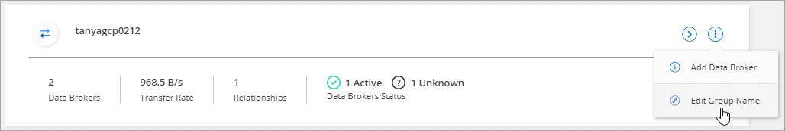
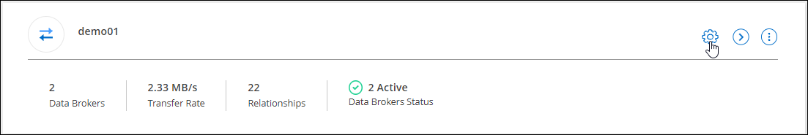

Notes de mise à jour
Notes de mise à jour
Gérez les groupes de courtiers de données
 Suggérer des modifications
Suggérer des modifications
- Fonctionnement des groupes de courtiers de données
- Recommandations en matière de sécurité
- Ajouter un nouveau courtier de données à un groupe
- Modifier le nom d'un groupe
- Configurez une configuration unifiée
- Déplacez les courtiers de données d'un groupe à l'autre
- Mettre à jour la configuration du proxy
- Afficher la configuration d'un courtier de données
- Résoudre les problèmes avec un courtier de données
- Supprimer un courtier de données d'un groupe
- Supprimer un groupe de courtier de données
Un groupe de courtier de données synchronise les données d'un emplacement source vers un emplacement cible. Au moins un courtier de données est requis dans un groupe pour chaque relation de synchronisation que vous créez. Gérer les groupes de courtiers de données en ajoutant un nouveau courtier de données à un groupe, en affichant des informations sur les groupes, etc.
Fonctionnement des groupes de courtiers de données
Un groupe de courtiers de données peut comprendre un ou plusieurs courtiers de données. Le regroupement de courtiers de données entre eux permet d'améliorer les performances des relations de synchronisation.
Les groupes peuvent gérer plusieurs relations
Un groupe de courtiers de données peut gérer une ou plusieurs relations synchronisées à la fois.
Imaginons par exemple que vous ayez trois relations :
-
La relation 1 est gérée par le groupe de courtiers de données A
-
La relation 2 est gérée par le groupe de courtiers de données B
-
La relation 3 est gérée par le groupe de courtiers de données A.
Vous voulez accélérer les performances de la relation 1 pour ajouter un nouveau courtier de données au groupe de courtier de données A. Dans la mesure où le groupe A gère également la relation de synchronisation 3, les performances de synchronisation de la relation sont également automatiquement accélérées.
Nombre de courtiers de données dans un groupe
Dans de nombreux cas, un seul courtier de données peut répondre aux exigences de performance d'une relation de synchronisation. Si ce n'est pas le cas, vous pouvez accélérer les performances de synchronisation en ajoutant des courtiers de données supplémentaires au groupe. Mais vous devez d'abord vérifier d'autres facteurs qui peuvent avoir un impact sur les performances de synchronisation. "En savoir plus sur la façon de déterminer si plusieurs courtiers de données sont nécessaires".
Recommandations en matière de sécurité
Pour assurer la sécurité de votre courtier en données, NetApp recommande les éléments suivants :
-
SSH ne doit pas autoriser X11 Forwarding
-
SSH ne doit pas autoriser le transfert de connexion TCP
-
SSH ne doit pas autoriser les tunnels
-
SSH ne doit pas accepter les variables d'environnement client
Ces recommandations de sécurité peuvent aider à empêcher toute connexion non autorisée à la machine du courtier de données.
Ajouter un nouveau courtier de données à un groupe
Il existe plusieurs façons de créer un nouveau courtier de données :
-
Lors de la création d'une nouvelle relation de synchronisation
-
Dans la page gérer les courtiers de données, sélectionnez Ajouter un nouveau courtier de données qui crée le courtier de données dans un nouveau groupe
-
À partir de la page gérer les courtiers de données en créant un nouveau courtier de données dans un groupe existant
-
Vous ne pouvez pas ajouter de courtiers de données à un groupe qui gère une relation de synchronisation chiffrée.
-
Si vous souhaitez créer un courtier en données au sein d'un groupe existant, le courtier en données doit être un courtier en données sur site ou le même type de courtier.
Par exemple, si un groupe inclut un courtier en données AWS, vous pouvez créer un courtier en données AWS ou un courtier en données sur site dans ce groupe. Vous ne pouvez pas créer de courtier en données Azure ou de courtier en données Google Cloud, car ils ne sont pas le même type de courtier.
-
Sélectionnez Sync > gérer les courtiers de données.
-
Sélectionnez Ajouter un nouveau Data Broker.
-
Suivez les invites pour créer le courtier de données.
Pour obtenir de l'aide, reportez-vous aux pages suivantes :
-
Sélectionnez Sync > gérer les courtiers de données.
-
Sélectionnez le menu d'action et sélectionnez Ajouter un courtier de données.

-
Suivez les invites pour créer le courtier de données dans le groupe.
Pour obtenir de l'aide, reportez-vous aux pages suivantes :
Modifier le nom d'un groupe
Modifier le nom d'un groupe de courtiers de données à tout moment.
-
Sélectionnez Sync > gérer les courtiers de données.
-
Sélectionnez le menu d'action et sélectionnez Modifier le nom du groupe.

-
Entrez un nouveau nom et sélectionnez Enregistrer.
La copie et la synchronisation BlueXP mettent à jour le nom du groupe de courtiers de données.
Configurez une configuration unifiée
Si une relation de synchronisation rencontre des erreurs lors du processus de synchronisation, l'unification de la simultanéité du groupe de courtiers de données peut aider à diminuer le nombre d'erreurs de synchronisation. Notez que les modifications apportées à la configuration du groupe peuvent affecter les performances en ralentissant le transfert.
Nous ne recommandons pas de modifier par vous-même la configuration. Consultez NetApp pour savoir quand modifier la configuration et comment la modifier.
-
Sélectionnez gérer les courtiers de données.
-
Sélectionnez l'icône Paramètres d'un groupe de courtiers de données.

-
Modifiez les paramètres selon vos besoins, puis sélectionnez Unify Configuration.
Notez ce qui suit :
-
Vous pouvez choisir les paramètres à modifier, mais vous n'avez pas besoin de les modifier simultanément.
-
Une fois qu'une nouvelle configuration est envoyée à un courtier de données, le courtier redémarre automatiquement et utilise la nouvelle configuration.
-
Cette modification peut prendre jusqu'à une minute et être visible dans l'interface de copie et de synchronisation BlueXP.
-
Si un courtier en données n'est pas en cours d'exécution, la configuration ne changera pas, car la copie et la synchronisation BlueXP ne peuvent pas communiquer avec lui. La configuration change après le redémarrage du courtier de données.
-
Une fois la configuration unifiée définie, tous les nouveaux courtiers de données utilisent automatiquement la nouvelle configuration.
-
Déplacez les courtiers de données d'un groupe à l'autre
Déplacez un courtier de données d'un groupe à un autre si vous avez besoin d'accélérer les performances du groupe de courtiers de données cible.
Par exemple, si un courtier de données ne gère plus une relation synchrone, vous pouvez facilement la déplacer vers un autre groupe gérant les relations de synchronisation.
-
Si un groupe de courtiers de données gère une relation de synchronisation et qu'il n'y a qu'un seul courtier de données dans le groupe, vous ne pouvez pas transférer ce courtier de données vers un autre groupe.
-
Vous ne pouvez pas déplacer un courtier de données vers ou depuis un groupe qui gère les relations de synchronisation chiffrées.
-
Vous ne pouvez pas déplacer un courtier en données actuellement déployé.
-
Sélectionnez Sync > gérer les courtiers de données.
-
Sélectionnez pour développer la liste des courtiers de données d'un groupe.
-
Sélectionnez le menu d'action d'un courtier de données et sélectionnez déplacer Data Broker.

-
Créez un nouveau groupe de courtiers de données ou sélectionnez un groupe de courtiers de données existant.
-
Sélectionnez déplacer.
La copie et la synchronisation BlueXP déplacent le courtier en données vers un groupe de courtiers de données nouveau ou existant. S'il n'existe aucun autre courtier en données dans le groupe précédent, la copie et la synchronisation BlueXP les suppriment.
Mettre à jour la configuration du proxy
Mettez à jour la configuration du proxy pour un courtier de données en ajoutant des détails sur une nouvelle configuration de proxy ou en modifiant la configuration de proxy existante.
-
Sélectionnez Sync > gérer les courtiers de données.
-
Sélectionnez pour développer la liste des courtiers de données d'un groupe.
-
Sélectionnez le menu d'action d'un courtier de données et sélectionnez Modifier la configuration du proxy.
-
Spécifiez des détails sur le proxy : nom d'hôte, numéro de port, nom d'utilisateur et mot de passe.
-
Sélectionnez mettre à jour.
La copie et la synchronisation BlueXP mettent à jour le courtier de données pour utiliser la configuration proxy pour l'accès Internet.
Afficher la configuration d'un courtier de données
Vous pouvez consulter des détails sur un courtier de données pour identifier des éléments tels que son nom d'hôte, son adresse IP, son CPU et sa mémoire vive disponibles, etc.
La copie et la synchronisation BlueXP fournissent les informations suivantes sur un courtier de données :
-
Informations de base : ID d'instance, nom d'hôte, etc
-
Réseau : région, réseau, sous-réseau, IP privée, etc
-
Logiciel : distribution Linux, version de courtier de données, etc
-
Matériel : processeur et RAM
-
Configuration : détails sur les deux types de processus principaux du courtier de données : scanner et transfert

Le scanner numérise la source et la cible et décide de ce qui doit être copié. Le transfert effectue la copie réelle. L'équipe NetApp peut utiliser ces détails de configuration pour suggérer des actions permettant d'optimiser les performances.
-
Sélectionnez Sync > gérer les courtiers de données.
-
Sélectionnez pour développer la liste des courtiers de données d'un groupe.
-
Sélectionnez pour afficher les détails d'un courtier de données.

Résoudre les problèmes avec un courtier de données
La copie et la synchronisation BlueXP affichent l'état de chaque courtier de données qui peut vous aider à résoudre les problèmes.
-
Identifiez tous les courtiers de données dont l'état est « Inconnu » ou « en échec ».

-
Placez le pointeur de la souris sur le
 pour voir la raison de l'échec.
pour voir la raison de l'échec. -
Corrigez le problème.
Par exemple, vous devrez peut-être redémarrer le courtier en données si celui-ci est hors ligne, ou supprimer le courtier en données si le déploiement initial a échoué.
Supprimer un courtier de données d'un groupe
Vous pouvez supprimer un courtier de données d'un groupe s'il n'est plus nécessaire ou si le déploiement initial a échoué. Cette action supprime uniquement le courtier en données des enregistrements de la copie et de la synchronisation BlueXP. Vous devrez supprimer manuellement le courtier en données et toutes les ressources cloud supplémentaires.
-
La copie et la synchronisation BlueXP suppriment un groupe lorsque vous supprimez le dernier courtier en données du groupe.
-
Vous ne pouvez pas supprimer le dernier courtier de données d'un groupe s'il existe une relation utilisant ce groupe.
-
Sélectionnez Sync > gérer les courtiers de données.
-
Sélectionnez pour développer la liste des courtiers de données d'un groupe.
-
Sélectionnez le menu d'action d'un courtier de données et sélectionnez Supprimer le courtier de données.

-
Sélectionnez Supprimer Data Broker.
La copie et la synchronisation BlueXP suppriment le courtier en données du groupe.
Supprimer un groupe de courtier de données
Si un groupe de courtiers de données ne gère plus de relations de synchronisation, vous pouvez supprimer le groupe, ce qui supprime tous les courtiers de données de la copie et de la synchronisation BlueXP.
Les courtiers de données que les fonctions de copie et de synchronisation BlueXP suppriment uniquement des enregistrements de la copie et de la synchronisation BlueXP. Vous devrez supprimer manuellement l'instance de courtier en données de votre fournisseur de cloud, ainsi que toutes les ressources cloud supplémentaires.
-
Sélectionnez Sync > gérer les courtiers de données.
-
Sélectionnez le menu d'action et sélectionnez Supprimer le groupe.
-
Pour confirmer, entrez le nom du groupe et sélectionnez Supprimer le groupe.
La copie et la synchronisation BlueXP suppriment les courtiers de données et le groupe.